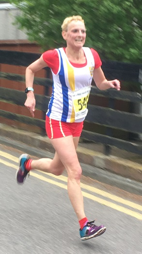

James Graham was first M60 as twelve Sevenoaks AC runners tackled the Darent Valley 10k, a Kent Grand Prix event, on 7th May 2017. Andrew Milne was the first home. The SAC results were as follows:
| Pos- ition | Bib- No. | Finish Time | Chip Time | Name | Gen- der | Cat- egory | Club or Team | Rank |
|---|---|---|---|---|---|---|---|---|
| 36 | 586 | 00:40:09 | 00:40:04 | ANDREW MILNE | M | SM | Sevenoaks AC | 1 |
| 40 | 372 | 00:40:20 | 00:40:15 | ANDREW HUTCHINSON | M | SM | Sevenoaks AC | 2 |
| 55 | 172 | 00:41:10 | 00:41:05 | JAMES GRAHAM | M | M60 | Sevenoaks AC | 3 |
| 59 | 2897 | 00:41:16 | 00:41:11 | NICK HUMPHREY-TAYLOR | M | M40 | Sevenoaks AC | 4 |
| 72 | 271 | 00:42:03 | 00:41:50 | ANDY ASHLEE | M | M40 | Sevenoaks AC | 5 |
| 95 | 388 | 00:43:25 | 00:43:09 | JOE PARSONS | M | SM | Sevenoaks AC | 6 |
| 186 | 680 | 00:47:06 | 00:46:51 | TONY HORLOCK | M | M50 | Sevenoaks AC | 7 |
| 301 | 542 | 00:51:42 | 00:51:26 | GRAZIA MANZOTTI | F | W45 | Sevenoaks AC | 8 |
| 379 | 506 | 00:55:33 | 00:55:17 | JENNY AUSTIN | F | W35 | Sevenoaks AC | 9 |
| 391 | 382 | 00:56:18 | 00:56:02 | LIONEL STIELOW | M | M60 | Sevenoaks AC | 10 |
| 485 | 660 | 01:00:17 | 00:59:34 | ADAM WESTBROOKE | M | M40 | Sevenoaks AC | 11 |
| 546 | 2839 | 01:03:47 | 01:02:54 | SYLVIA LEWIS | F | W55 | Sevenoaks AC | 12 |
The full results are here.

Grace Manzotti adds: "Having done the marathon at the beginning of April I was not going to race for a while, but everybody tempted me saying this race was fantastic with amazing views so I signed up. The race start time was 8.30 so when the alarm went off at 6.00 on Sunday I wasn’t very impressed. I picked Lionel up at 7.00 and off we went. The race was really well organised and I like local races, it is always nice to see people we know from Sevenoaks and parkruns. 13 of us from Sevenoaks AC were there. It was rather cold, but a very good temperature for running. I did not know what to expect as I had never done this race before and people had told me it was tough, not a PB one, but a good one to do.
"The route goes through the beautiful villages of Farningham, Lullingstone and Eynsford. I had been warned about 2 hills, especially one at km 6, I was told to keep something in the tank for it as it was tough. But then some people had told me that at the end of the hill you turn left and then from km 7 is all downhill from there. So first 5km all well, then the race goes off road on gravel for a bit using the same route as Lullingstone parkrun and then there was "the hill". It didn't look too bad from the bottom so I thought well go for it also thinking it would go downhill straight away. So I powered up through it, the end of it was steeper than it looked and my legs were not very happy, I found it hard to keep running but I kept thinking downhill soon! and….. No!! I turned left and there was another hill on the road which went steady up for another km! People had been lying!! My legs were screaming by then, the downhill nowhere to be seen. And then at km 8 here it comes, my legs start to recover and then I was flying downhill and it felt great. Before the finish there was another flat bit and then the road went down again to the end!!! It was great to fly to the finish line! It was really good to see Anna and Nick cheering me on and it was lovely to get a warm cup of tea from Lionel. I think this is a lovely and well organised race with fantastic views so I definitely recommend it. I am happy about my finish time 51.26, I would like to do it again next year as I will know what to expect and can try to go a bit faster."